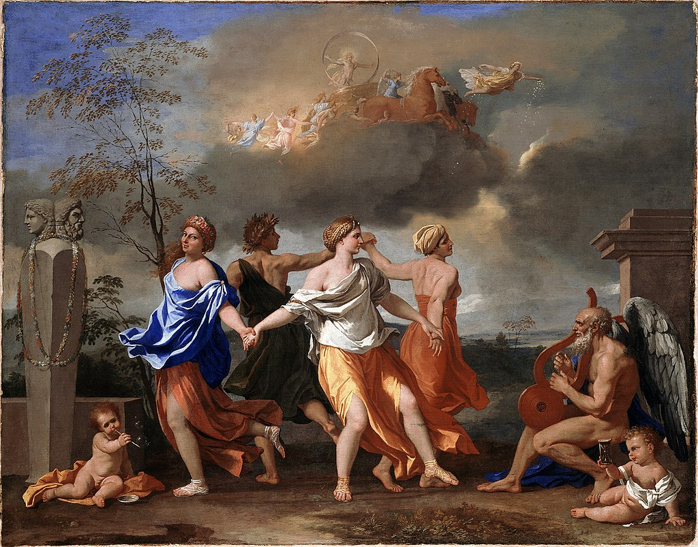

<head>
<meta charset="UTF-8" />
<meta name="keywords" content="drawing, painting" />
<meta name="description" content="drawings by Sunjy" />
<title>Sunjy</title>
<link rel="shortcut icon" type="image/x-icon" href="../../mImages/mCommon/favicon.ico" media="screen" />
<link rel="stylesheet" type="text/css" href="../../mCsses/mCommon/mCssA.css" />
<link rel="stylesheet" type="text/css" href="../../mCsses/mCommon/mCssB.css" />
<link rel="stylesheet" type="text/css" href="../../mCsses/mCommon/mCssC.css" />
<link rel="stylesheet" type="text/css" href="../../mCsses/mCommon/mCssD.css" />
<link rel="stylesheet" type="text/css" href="../../mCsses/mContent/mCssA.css" />
<link rel="stylesheet" type="text/css" href="../../mCsses/mContent/mCssB.css" />
<link rel="stylesheet" type="text/css" href="../../mCsses/mContent/mCssC.css" />
<link rel="stylesheet" type="text/css" href="../../mCsses/mContent/mCssD.css" />
</head>
<script type="text/javascript" src="../../mScripts/mContent/mContentAA.js" /></script>
<script type="text/javascript" src="../../mScripts/mContent/mContentAB.js" /></script>
<script type="text/javascript" src="../../mScripts/mContent/mContentAC.js" /></script>
<script type="text/javascript" src="../../mScripts/mContent/mContentAD.js" /></script>
<script type="text/javascript"></script> 
<script type="text/javascript">
document.write('<div class="mImgAbsolute"></div>');
/*
document.write('<p class="mFontSizeBColor" />From a white paper...</p>');
document.write('<table class="center"><tr><td>');
document.write('');
document.write('</td></tr></table>');
*/
</script>


<script type="text/javascript">
document.write('<p class="mFontSizeBColor" />A Dance to the Music of Time</p>');
document.write('<p class="mFontSizeSColor" />By Nicolas Poussin, 1634-1635. “A Dance to the Music of Time” is a painting whose exact meaning is not known. One interpretation is that the picture represents the passing of time and the different stages of life.<br><br>Its iconography depicts the revolving wheel of fortune: poverty, labor, wealth, and pleasure. Poussin’s paintings are based on a historical iconographic that was understood by his patrons of the 1600s.<br><br>Poverty is the male figure at the very back of the circle. He dances with his back turned towards the viewer, barefoot and of low status, looking towards Labor.<br><br>Labor is represented as a healthy young woman, dancing barefoot. Her bare shoulders and hair cover represent hard work. She is eagerly trying to grasp Wealth’s hand.<br><br>Wealth is a young woman with paler skin who dances with golden sandals and robe; she is reluctantly reaching out to Labor’s hand.<br><br>Pleasure is the young woman in blue who gazes at the viewer with a smirk and a flushing face.<br><br>An earlier interpretation was that the circle of figures symbolizes the Seasons Dance to the music played by Father Time on his lyre.<br><br>Autumn is here represented as Bacchus, the god of wine. The other seasons follow in turn as Winter, Spring, and Summer.<br><br>The two cherubs or cupids, one blowing bubbles and the other holding an hourglass allude to the transience of life.<br><br>The monument on the far left, consisting of a four-sided shaft tapering inward towards the bottom. It bears a double-headed bust, which depicts the youthful and mature Bacchus.<br><br>The scene is set in the early morning, with Aurora, goddess of dawn, preceding the chariot of Apollo, the sun-god in the sky. The Hours follow him as Apollo holds a ring representing the Zodiac.<br><br>As Poussin developed the painting, the theme appears to have transformed from the “Four Seasons Dance” into the concept of the “Cycle of Life and Fortune.” <br><br>This painting was created by a Roman patron who later became Pope Clement IX. The future Pope may have been influential in the changing of the theme.</p>');
document.write('<table class="center" /><tr><td>');
document.write('<br>Its iconography depicts the revolving wheel of fortune: poverty, labor, wealth, and pleasure. Poussin’s paintings are based on a historical iconographic that was understood by his patrons of the 1600s.<br><br>Poverty is the male figure at the very back of the circle. He dances with his back turned towards the viewer, barefoot and of low status, looking towards Labor.<br><br>Labor is represented as a healthy young woman, dancing barefoot. Her bare shoulders and hair cover represent hard work. She is eagerly trying to grasp Wealth’s hand.<br><br>Wealth is a young woman with paler skin who dances with golden sandals and robe; she is reluctantly reaching out to Labor’s hand.<br><br>Pleasure is the young woman in blue who gazes at the viewer with a smirk and a flushing face.<br><br>An earlier interpretation was that the circle of figures symbolizes the Seasons Dance to the music played by Father Time on his lyre.<br><br>Autumn is here represented as Bacchus, the god of wine. The other seasons follow in turn as Winter, Spring, and Summer.<br><br>The two cherubs or cupids, one blowing bubbles and the other holding an hourglass allude to the transience of life.<br><br>The monument on the far left, consisting of a four-sided shaft tapering inward towards the bottom. It bears a double-headed bust, which depicts the youthful and mature Bacchus.<br><br>The scene is set in the early morning, with Aurora, goddess of dawn, preceding the chariot of Apollo, the sun-god in the sky. The Hours follow him as Apollo holds a ring representing the Zodiac.<br><br>As Poussin developed the painting, the theme appears to have transformed from the “Four Seasons Dance” into the concept of the “Cycle of Life and Fortune.” <br><br>This painting was created by a Roman patron who later became Pope Clement IX. The future Pope may have been influential in the changing of the theme." />');
document.write('</td></tr></table>');
</script>


